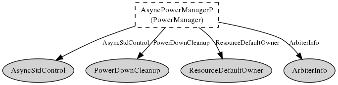

Please refer to TEP 115 for more information about this component and its
intended use.
This is the internal implementation of the standard power management
policy for managing the power states of non-virtualized devices.
Non-virtualized devices are shared using a parameterized Resource
interface, and are powered down according to some policy whenever there
are no more pending requests to that Resource. The policy implemented
by this component is to power down a device as soon as it becomes free.
Such a policy is useful whenever a device has a negligible wake-up
latency. There is no cost associated with waiting for the device to
power up, so it can be powered on and off as often as possible.
Powerdown of the device is done through the AsyncStdControl
interface, so this component can only be used with those devices that
provide that interface.
For devices providing either the StdControl or
SplitControl interfaces, please use either the
StdControlPowerManagerC component or the
SplitControlPowerManagerC component respectively.
